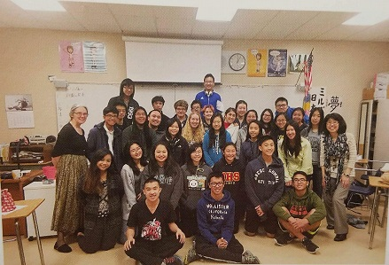

Cultural Clubs
Dragon Team
The Mills High School Dragon Team is performing for its 21st year as a performance art and a cultural experience. Performing in Millbrae and most notably in the annual San Francisco Chinese New Year Parade, the team of students diligently train alongside coaches and former alumni. Their combined efforts carry on the tradition and represents their school through a cultural performance.During school, we meet at room 132 (Mr. Phillips) only when necessary or important. Usually, we have two of these meetings during lunch. Outside of school days, we have a practice every week for 5-7 weeks.
Presidents --- Seth Tantuico, Pauline Yang, Timothy Leung, Jadelyn Eagens
Filipino American Alliance (FAA)
FAA is a cultural club where any student at Mills, regardless of race, can learn about Filipino traditions and the language Tagalog. We participate in many school events such as food fairs, Mills Mania, and perform the dance Tinikling for the International Assembly. For Tinikling, we practice after school in order to imitate the gracefulness and speed of birds when they are maneuvering through trees, stems, branches and bamboo poles. Also, potlucks allow our family to get together and relieve us from some stress by having good food, good company and fun. Meetings are held every other Thursday during lunch in Mr. Lira's room.
Presidents --- Michaela Serna + Alexa Julaton
Japanese Cultural Club
In Japanese Culture Club, we strive to learn and take part in the many different aspects of the colorful world known as Japanese Culture. Our meetings consist of a wide variety of activities, a few of them are dancing, trying traditional foods, taking parts in numerous festivals, and viewing pop culture. We do delve into anime culture and j-pop, but we pride ourselves in understanding tradition and the origins of Japanese culture. We meet in room 154 every Friday.
President --- Alec Guiulfo
Korean Cultural Club
As the Korean Cultural Club of Mills High School, our purpose is to immerse people into Korean culture. During meetings, we discuss upcoming events such as what to sell at Mills Mania as well as watch Korean dramas and music videos. We also perform to KPOP at the International Assembly, and just last year we performed at a Korean Cultural Festival. Additionally, to activities in school we also have club bondings, such as going out to Korean restaurants. We meet on Wednesdays at lunch in Room 154. Meet Wednesdays at lunch in room 154.
President --- Pauline Wong
Latina Mentor Program
The Latina Mentor Program is a fun and uplifting club in which provides young girls to pursue a successful future through mentorship. This is a unique program that is only offered here at Mills High School and has been in existance for almost twenty five years. We are invovled in many school events such as the international assembly and food faire. We also have a Ballet Folklorico Dancing team that helps girls develop confidence and learn about Latin culture. We warmly welcome new members 9th through 12th grade every year and are dedicated to help girls achieve their dreams. Meetings are on Monday at lunch in Room 166.
Senior Presidents --- Jahaira Vasquez + Ana Clara Silva
Polynesian Club
Join the Poly Club where everyone knows your name and fun to get to know others no matter who you are. All are welcome! Activities include field trips, food fair, and school wide assemblies, as well as learning about dances foods in the various Polynesian Islands. Meet Thursdays or Fridays at lunch in the Mat Room.
President --- Sione Langi